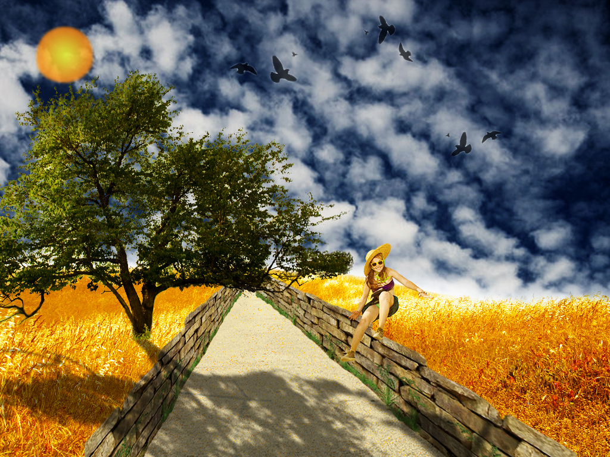

Ovdje možeš pregledati sve moje uratke iz kolegija Digitalni multimedij 1 u akademskoj godini 2022./2023. Tijekom semestra odradio sam 11. vježbi i tri projektna zadatka u programima FontForge, Illustrator, Photoshop, Premiere Pro i Dreamweaver.
Zadatak je prve vježbe bio osmisliti i kreirati svoj vlastiti originalni font vlastoručnim crtanjem svakog pojedinačnog znaka koristeći slova svoga imena i hrvatske dijakritičke znakove. Koristio sam program FontForge, a kako to izgleda, pogledajte na početnoj stranici u znakovima mojega imena!
Zadatak je druge vježbe bio nacratati Bezierove krivulje u ponuđenim programima te ih izblendati kroz određeni font. U nastavku pogledajte kako sam ja to izveo u programu Illustrator.
U trećoj sam vježbi kroz Illustrator nacrtao dvije slike koristeći razne oblike kojima sam mijenjao veličinu i boju, transformirao ih, multiplicirao te grupirao, ali i dodao pozadinu kako bi krajnji rezultat bio što više estetično prihvatljiv.
Četvrta vježba se sastojala od crtanja raznih oblika u Illustatoru koristeći razne gradijente i transparencije kako bi se dobio što realističniji efekt.
Prvi je projektni zadatak obuhvaćao potrebne tehnike i znanja usvojena u prve četiri vježbe.

Kroz photoshop sam u ovoj vježbi popravljao nedostatke i uklanjao neželjene stvari raznim tehnikama retuširanja fotografija kao što su zamućivanje i kloniranje.
Koristeći selekcije te stvaranjem maski u šestoj sam vježi crno-bijeloj fotografiji dodao boju te sam svojim fotografijama dodao nerealistične boje stvarajući svojevrstan kolaž koristeći Photoshop.


Koristeći fotoshop, u sedmoj sam vježbi kombinirao više fotografija izrezivanjem dijelova različitih slika koje sam na kraju spojio u jednu cjelinu.
Drugi je projektni zadatak obuhvaćao potrebne tehnike i znanja usvojena od pete do sedme vježbe.

Zadatak je ove vježbe bio izraditi kinemagraf što jest video isječak čija se sekvenca ponavlja u beskonačnost, a u kompoziciji spaja pokretnu i statičnu grafiku (sliku i video). Programe koje sam koristio su Photoshop i Premiere Pro.
Koristeći dva videozapisa, u ovoj sam vježbi u njih ubacio tekst, rezao ih i spajao, dodao im različite efekte, prijelaze i glazbu kako bi kako bi krajnji rezultat izgledao što bolje.
Koristeći Dreamwaver i github platformu, izradio sam svoju prvu stranicu koju možeš pogledati ovdje!